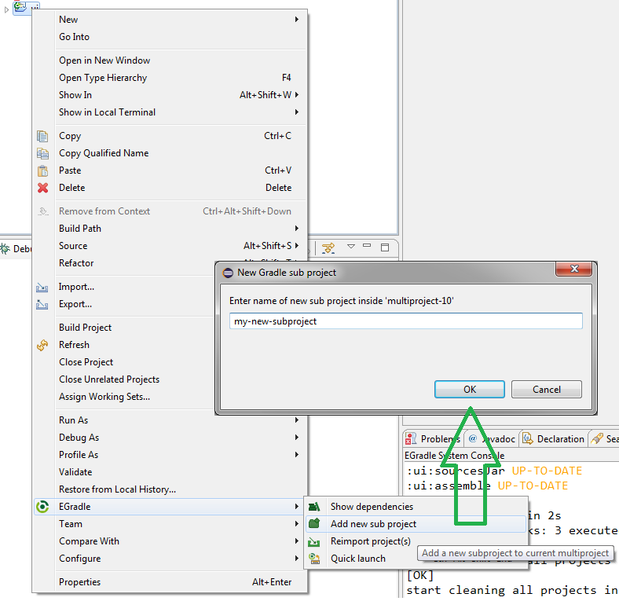

User guide
User guide
When your gradle project is already a multi project and you want to add a sub project you can do this by context menu as shown in next picture:
After clicking on "OK" the Reimport-Dialog will appear. Normally you just have to press OK there, but you can press cancel - e.g. when you want to add more than one sub project before doing the import...